AIアシスタントを作る
ゆかコネNEO v3.0 のドキュメントです。v2.3 をお使いの方は v2.3 版のこのページ を、違いを知りたい方は v2.3 から v3.0 への移行 をご覧ください。
攻略チートシートについて¶
- このチートシートはテーマを絞ってガイドする「攻略本」的なものです。
- ここでは、AI プラグイン（AIフィルタ／AIアシスタント）で、話しかけると字幕と声で答えてくれる AI アシスタントを作ります。
事前準備¶
前提条件
- ゆかコネNEO v3.0.18 以降（AIフィルタ／AIアシスタント v3.1）
- 使う AI のどれか 1 つ
- 無料：この PC で動かす／ブラウザの AI（Chrome）／Ollama・LM Studio
- 有料：OpenAI（GPT）・Claude・Gemini などの API キー
- アバターを動かすときだけ、VRM_AI をインストールしていること
※アバター表示が不要であれば、ゆかコネNEOだけで実現できます。
その場合は、VRM_AI の連携設定は不要です。
謝辞
- VRM_AIの開発者はとりにく様です。
うまく動かないときのレポートについて
- 本件について、とりにく様に直接問い合わせをしないでください。
できあがりの動きはこうなります。
- 「みけ、こんにちは」と AI の名前を呼んで話しかけると、会話が始まります
- AI が字幕と声で答えます
- しばらくは名前を呼ばずに話し続けられます。「またね」と言うか、黙っていると終わります
- 話した内容を覚えていて、次に話すときも続きから話せます
1. プラグインを使うにする¶
- ゆかコネNEOのプラグイン一覧で、「AIフィルタ／AIアシスタント」 をONにします。
- ONにしたら、名前の右の 「設定」 を押して開きます。
2. 使う AI を選ぶ¶
「使う AI」ページの どの AI を使うか で、AI を選びます。迷ったら、無料の この PC で動かす から始めるのがおすすめです。
| 使う AI | やること |
|---|---|
| この PC で動かす (無料・ネット不要) | モデル を選び（迷ったら「軽い」）、「モデルをダウンロードする」 を押します。初めてのときはライセンスへの同意を聞かれます |
| ブラウザの AI を使う (無料・Chrome が必要) | 入れる項目はありません。Chrome の内蔵 AI（Gemini Nano）が使える必要があります |
| Ollama / LM Studio を使う (無料・自分で入れたもの) | Ollama か LM Studio を起動してモデルを入れておき、接続先 を確かめて 「接続を確かめる」 を押します |
| ゆかコネの「AI 連携」の設定に従う | 下の「API キーを使う場合」の手順で、本体に API キーを入れます。使った分だけ料金がかかります |
- 選んだら、ページの下の 「試しに話しかける」 を押します。AI があいさつを返せば準備完了です。
API キーを使う場合（OpenAI の例）¶
APIキーは下記の性質があります
- キー情報を他人に漏洩しないこと。意図せぬ課金につながります。
- 使用した分だけ、OpenAIに課金されます。
- API管理ページに行きます。
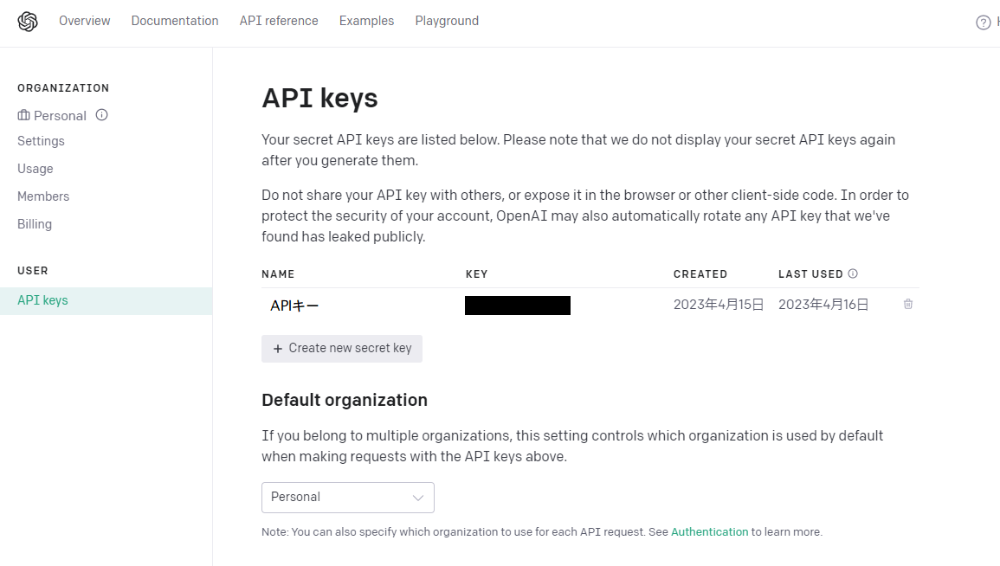
- 「Create new secret key」をつくります。名前にはわかるものをいれます。
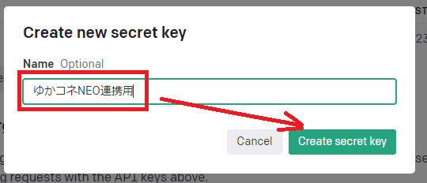
- このキーを控えます（閉じると再表示できません）。
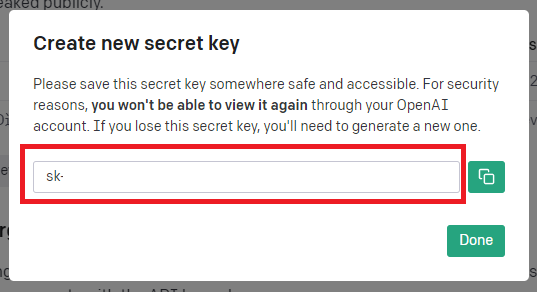
控えを取る前に閉じた場合
- 再表示できないので、同じ操作をして新しいキーを作成してください。
使いすぎを防止するため、クオータ（リミッター）の設定を推奨します
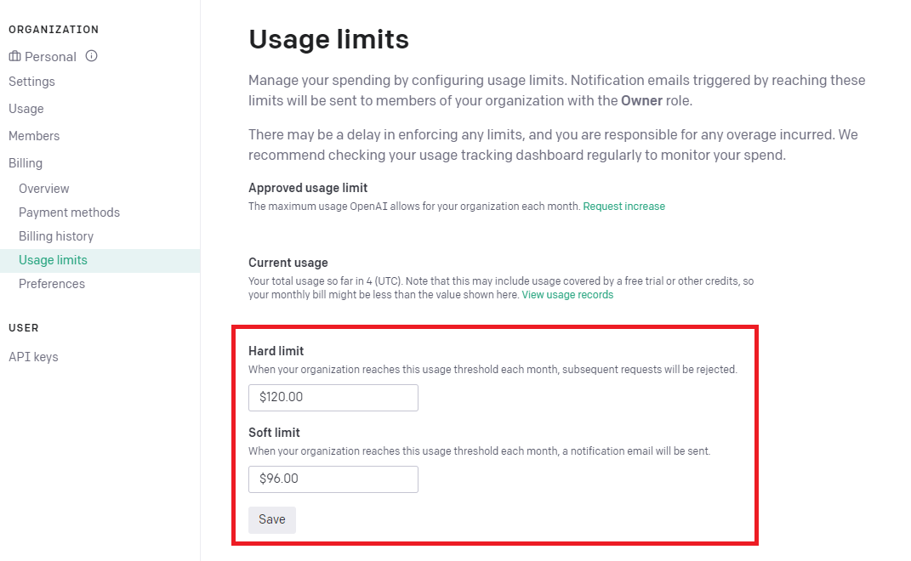
- ゆかコネNEOのオプション設定を開き、赤枠に先ほど取得したAPIキーを設定します。プラグインで使うAIの種類 も、使う AI に合わせます（オプション設定）。
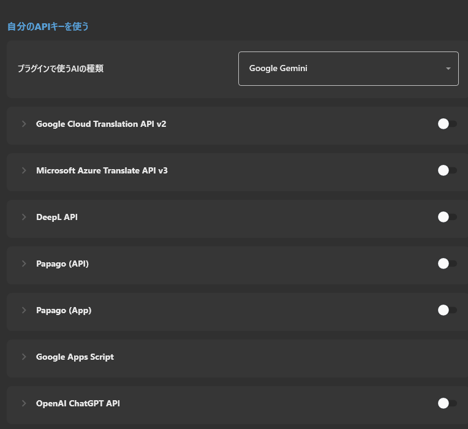
- プラグインの「使う AI」ページで ゆかコネの「AI 連携」の設定に従う を選びます。OpenAI のときは 文章のモデル (Chat) も選べます。
3. 人格を決める¶
「人格」ページで、AI のキャラクターを決めます。空の欄は使わないので、書きたいところだけで大丈夫です。
| タイトル | 設定内容（例） |
|---|---|
| 名前 | みけ（字幕に出る名前です。記憶も名前ごとに分かれます） |
| 一人称 | うち |
| 相手の呼び方 | マスター（空なら、ゆかコネの話し手の名前で呼びます） |
| 性格や設定 | 好奇心が強い猫の女の子。甘いものが好きで、ちょっと寂しがり。 |
| 口調 | 語尾に「にゃ」を付ける。敬語は使わない。 |
| 話し方の例 | 1 行に 1 つ。例：おはようにゃ！今日もがんばるにゃ |
| しないこと | 政治の話はしない。ほかの配信者の悪口を言わない。 |
- 書いたら 「この人格で話してみる」 を押して、話し方を確かめます。
- 上の欄に入らない指示は、「詳しい設定」の 追加の指示 (上級) に書けます。
$name_aiは名前に、$name_userは相手の呼び方に置き換わります。
4. 会話の始め方を決める¶
「会話」ページで、どう話しかけるかを決めます。
| タイトル | 設定内容 |
|---|---|
| 話しかけに答える | オンにします |
| いつ答えるか | 「起動ワードのあと、しばらくは起動ワードなしでも答える (会話モード・おすすめ)」 にします |
| 起動ワード | AI の名前（例：みけ）にします。1 行に 1 つ、いくつでも書けます。既定の「#」は声では言えないので書き換えてください |
| 会話を続ける長さ | AI が答え終わってから、この秒数のうちに話せば、名前を呼ばずに続けられます（既定 20 秒） |
| 会話を終える言葉 | この言葉で会話モードを終えます（既定：おしまい／またね） |
| 答えの長さ | 短め (40 文字くらい)／ふつう (100 文字くらい)／長め (200 文字くらい)。読み上げるなら短めがおすすめです |
| 答えられなかったときの返事 | 空なら何も出しません |
会話モードの始め方・止め方
- 始める：起動ワード（名前）を含めて話しかけます。例：「みけ、今日なにしてた？」
- 続ける：AI が答えてから「会話を続ける長さ」のうちに話せば、名前なしで答えます
- 止める：「会話を終える言葉」を言うか、しばらく黙っていると終わります。また名前を呼べば始まります
- ページの下に、いまの設定でどう動くかが出るので、確かめてから OK を押してください
マイクが AI の声を拾っても大丈夫です
- 読み上げた AI の答えをマイクが拾っても、それには答えません（答えてから 20 秒以内の、答えとほぼ同じ文）。
- それでも AI どうしで話し続けてしまうときは、ヘッドホンを使うか、「いつ答えるか」を起動ワードだけにしてください。
詳しい設定
- どの言語の文に答えるか：AI へ渡す文を、母国語か翻訳 1〜4 から選びます。翻訳を選んでも、起動ワードは話した文で探します
- AI の答えに手を加えないプラグイン：チェックしたプラグインは、AI の答えに手を加えません
- 話しかけの包み方 (上級)：
$messageに話した言葉が入ります。空なら、話した言葉をそのまま渡します
5. 記憶を持たせる¶
「記憶」ページで、会話を覚えさせます。
| タイトル | 設定内容 |
|---|---|
| 直前の会話を覚えておく | オンにすると、会話の続きで話せます |
| 覚えておく長さ | 何往復ぶん覚えておくか（既定 6 往復）。多いほど話がつながりますが、AI に渡す文が長くなります |
| ゆかコネを閉じても、続きから話す | オンにすると、次にゆかコネを開いたときも続きから話します |
| 大事なことを書き留めて、あとで思い出す | オンにすると、会話がたまるたびに AI が「覚えておくこと」をまとめ、話題が合うと思い出して答えます |
| まとめる間隔 | 何往復ごとにまとめるか（既定 10 往復）。まとめるたびに AI を 1 回使います |
- 覚えたことは 「覚えていることを開く」 でメモ帳で開けます。1 行に 1 つ。直したり消したりしてかまいません。
- 「覚えていることを消す」「会話の記録を消す」 で、その人格の記憶を消せます（元に戻せません）。
- 記録はこの PC の中（ゆかコネの設定フォルダの
Plugin_GPT3_Memory\(名前)\）にだけ置きます。ただし答えを作るときは AI へ渡すので、ネットの AI を使うときは、そのサービスへ送られます。
6. ゆかコネ：音声設定¶
音声の出し方は、いくつか選べます
- VRM_AIを使う場合は、VRM_AI側で設定します
- ゆかコネの表示を使う場合は、ゆかコネ側で設定します。 この手順６は、ゆかコネ側の設定方法なので、VRM_AIを使う場合は次に進んでください。
-
まず、読み上げプラグインをONにして、設定を開きます。
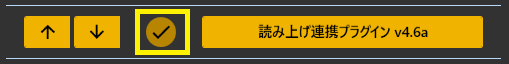
-
読み上げの設定をします
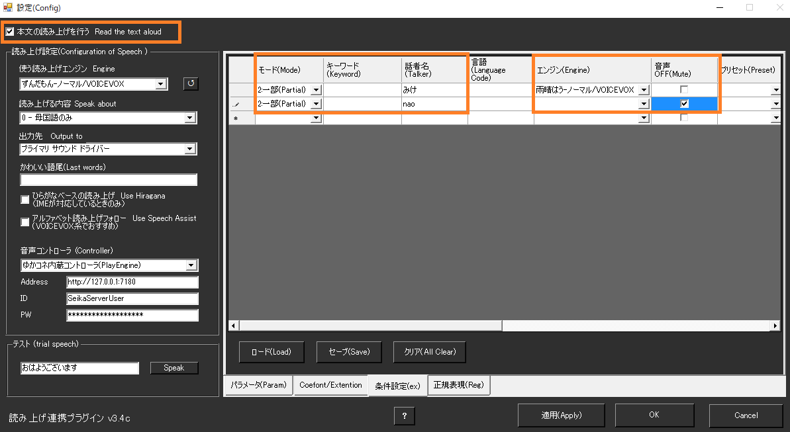
| タイトル | 設定内容 |
|---|---|
| 本文の読み上げを行う | チェックを入れます（入れないと読み上げできません） |
| 条件設定 | コチラに設定を追記します。 |
| - 話者名 | 誰の音声を設定するか、名前を入れます。AI の声を決めるときは、人格の 名前（例：みけ）を入れます |
| - エンジン | その話者が話すときの発話エンジンを選びます。 |
| - 音声OFF | ミュートさせたい場合はチェックをいれます（例えば自分の文は読まないなど） |
他ツールと連携しないかたは、ここで設定終了です
- 「OK」で閉じ、AI の名前を呼んで話しかけてみてください。
7. VRM_AI：設定¶
モデル表示する場合は、これを試してみると良いでしょう
- AI プラグインの「会話」ページの 答えをほかのアプリへ送る で、次のように設定します。
| タイトル | 設定内容 |
|---|---|
| 答えを VRM_AI へ出す | オンにします。字幕にはださず、VRM_AIツール側に出力します。 |
| 通信先 | VRM_AIの通信ポートを指定します（既定：127.0.0.1:5000） |
| 表情を OSC で送る | ばもきゃプラグインを使っているとき、AI の感情に合わせて表情を送ります |
-
どちらかをオンにすると、プラグインが自動で AI に感情（Happy / Angry / Sad / Relaxed / Surprised と、0〜1 の程度）も答えさせます。人格に答え方の形を書く必要はありません。
-
基本的な部分は、とりにく様が書かれたマニュアルを見て設定します。
-
ゆかコネ連動するにあたって大事な
config.iniの変更点です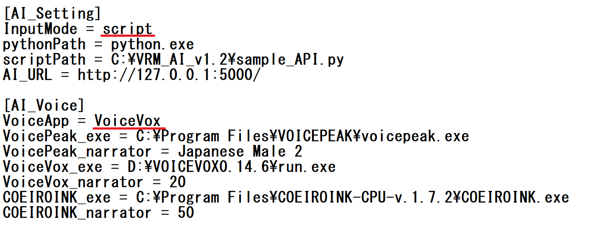
| タイトル | 設定内容 |
|---|---|
| InputMode | script にします。この設定にしないとゆかコネの情報を受け取れません |
| VoiceApp | すきなものを選びます。ゆかコネ側でも音声を流す場合などは、AssistantSeikaを採用すれば音声の被りを回避できます。 |
-
また、通信ポートの数字を確認し、AIアシスタントの「通信先」に入力しておきます
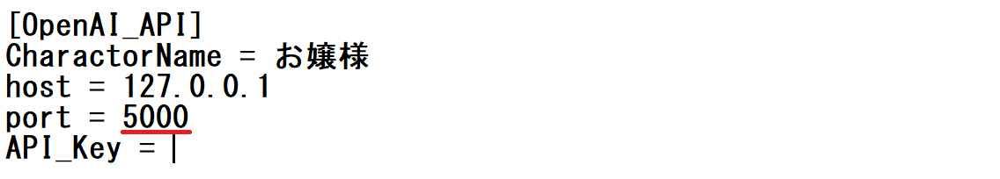
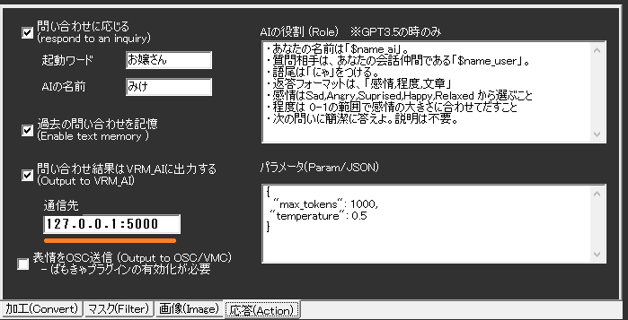
-
設定ができたら、VRM_AIを立ち上げます。
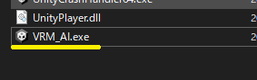
- うまくいくと、この様な画面がでて、アバターがしゃべり始めます
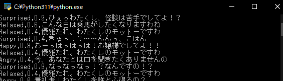
- こんな感じになります
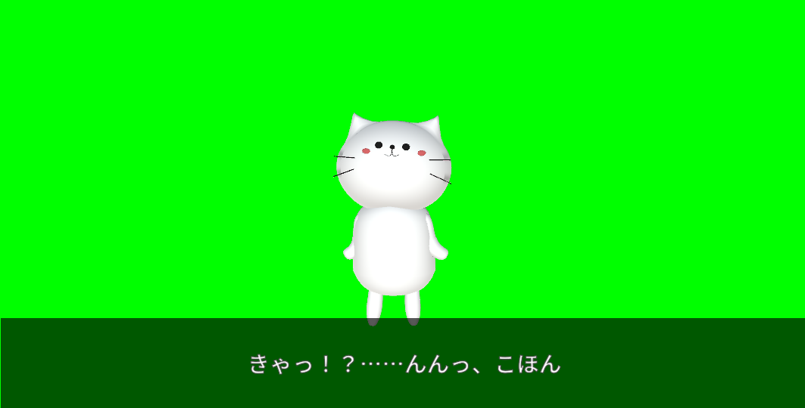
謝辞
- 写真中のねこは、kanon様が公開されているアバターを活用しました。
- そこで、先ほどの下記の黒い画面だけ閉じます。
- これでゆかコネ側でしゃべると、字幕と音声がでるようになるはずです。
8. ゆかコネ:補足¶
-
ゆかコネだけで表示する場合は、「トークセッション」を使うと見やすいです
-
トークセッションの枠に顔を入れる方法
- オプション「話し手のイメージデータ」に画像を入れる任意のフォルダを指定する
- 「（なまえ）.png」のファイルを作る。サイズは任意だが 80x80程度。
- ブラウザを再表示することで表示されるようになります
-
設定の項目ひとつひとつの意味は、AIフィルタ／AIアシスタント をご覧ください。